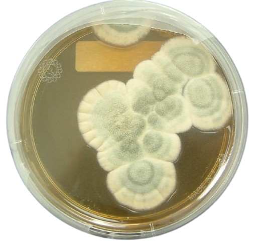
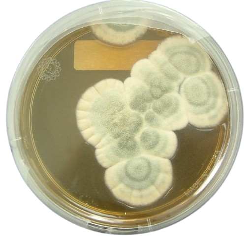

In terms of antibiotics, plant-based compounds have been explored and used to create modified medications(ex; penicillin, alkaloids, phenolics, etc)--, typically flavanoids and other chemicals found in fungi and fruits/vegetables. Even with the development of modern healthcare and synthetic products, traditonal methods derived from medicinal plants have made up 80% of the benefits from our past - and for potential drug advancement(WHO). Carrying the span of up to 420,000+ species of plants, the healing properties of herbs and minerals have found a place in countless cultures(ancient periods) up until now -> 3.5-4 billion people(primary health-care), maintaining a stable flow of desire and usage. Moreover, the existing anti-microbial treatment has yet to improve with phytochemicals(unscreened/other)--and grow with exploration.

 
